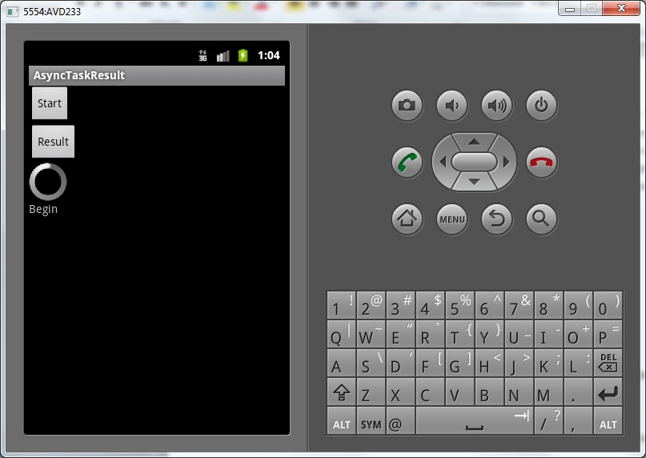
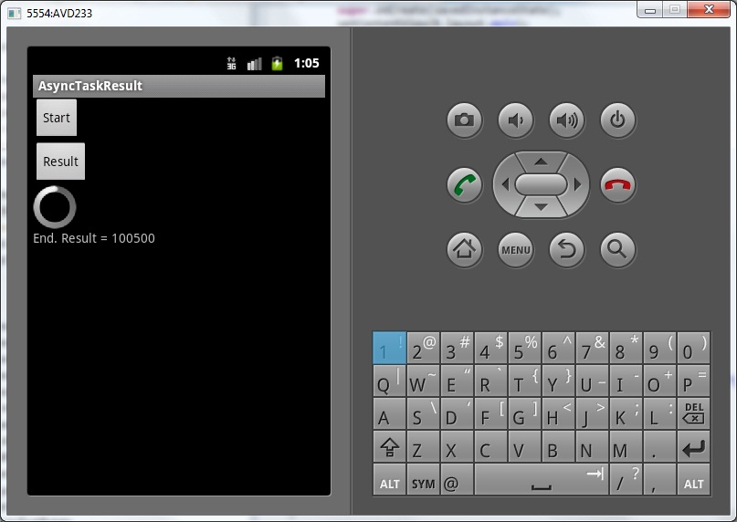
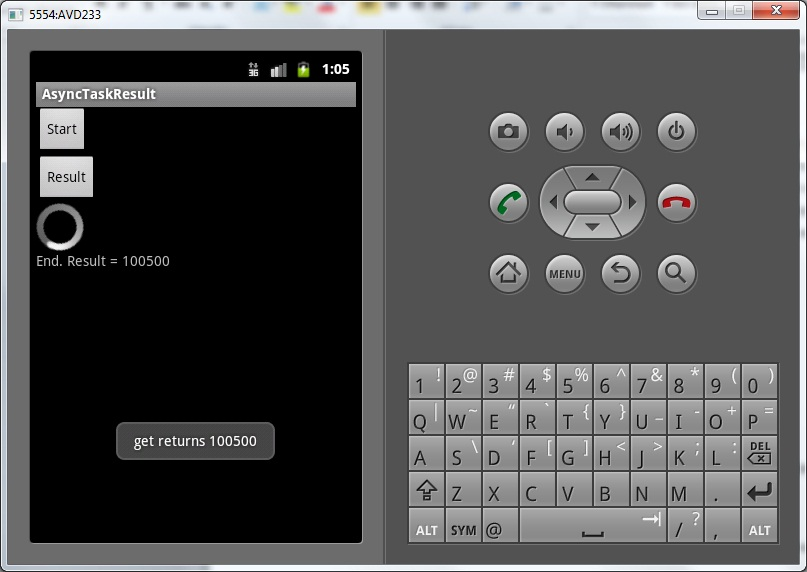
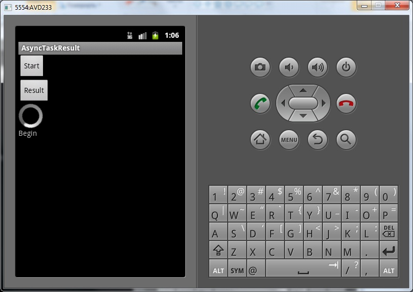
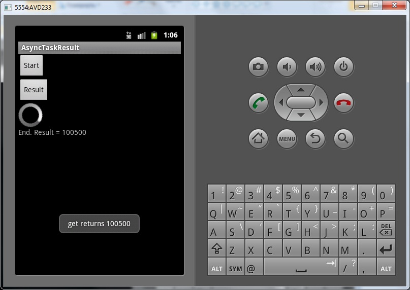

В этом уроке:
- используем третий параметр
- используем метод get для получения результата
На прошлом уроке мы рассмотрели типы данных, которые указываем в угловых скобках при описании класса-наследника AsyncTask. Их три:
1) Тип входных данных. Это данные, которые пойдут на вход AsyncTask
2) Тип промежуточных данных. Данные, которые используются для вывода промежуточных результатов
3) Тип возвращаемых данных. То, что вернет AsyncTask после работы.
Мы уже поработали с первыми двумя. Сейчас будем использовать третий. Это тип (класс) объекта, который должен нам вернуться из AsyncTask. Получить этот объект мы можем двумя способами:
1) Он передается на вход метода onPostExecute, который срабатывает по окончании задачи
2) Метод get возвращает нам этот объект
Мы вызываем метод get, чтобы получить результат работы AsyncTask. Но что будет, если задача еще не завершена, а мы вызвали get? Метод get будет ждать. Т.е. просто блокирует поток, в котором он выполняется, и не отпустит, пока не получит какой-то результат или не выскочит exception.
Есть еще реализация метода get с таймаутом. В этом случае get будет ждать указанное время, а потом сгенерирует Exception. Если же задача уже была завершена, то метод выполнится сразу и ждать ничего не будет.
Посмотрим на примере. Создадим приложение, будем запускать задачу, которая будет висеть 5 секунд, и попробуем повызывать метод get.
Создадим проект:
Project name: P0881_AsyncTaskResult
Build Target: Android 4.0
Application name: AsyncTaskResult
Package name: ru.startandroid.develop.p0881asynctaskresult
Create Activity: MainActivity
strings.xml:
<?xml version="1.0" encoding="utf-8"?>
<resources>
<string name="app_name">AsyncTaskResult</string>
<string name="start">Start</string>
<string name="get">Result</string>
</resources>main.xml:
<?xml version="1.0" encoding="utf-8"?>
<LinearLayout
xmlns:android="http://schemas.android.com/apk/res/android"
android:layout_width="fill_parent"
android:layout_height="fill_parent"
android:orientation="vertical">
<Button
android:id="@+id/btnStart"
android:layout_width="wrap_content"
android:layout_height="wrap_content"
android:onClick="onclick"
android:text="@string/start">
</Button>
<Button
android:id="@+id/btnGet"
android:layout_width="wrap_content"
android:layout_height="wrap_content"
android:text="@string/get"
android:onClick="onclick">
</Button>
<ProgressBar
android:layout_width="wrap_content"
android:layout_height="wrap_content">
</ProgressBar>
<TextView
android:id="@+id/tvInfo"
android:layout_width="wrap_content"
android:layout_height="wrap_content"
android:text="">
</TextView>
</LinearLayout>Кнопка Start будет начинать выполнение задачи, а кнопка Result – выводить результат. ProgressBar, который покажет, что приложение висит. TextView для вывода информации.
MainActivity.java:
package ru.startandroid.develop.p0881asynctaskresult;
import java.util.concurrent.ExecutionException;
import java.util.concurrent.TimeUnit;
import android.app.Activity;
import android.os.AsyncTask;
import android.os.Bundle;
import android.util.Log;
import android.view.View;
import android.widget.TextView;
import android.widget.Toast;
public class MainActivity extends Activity {
final String LOG_TAG = "myLogs";
MyTask mt;
TextView tvInfo;
public void onCreate(Bundle savedInstanceState) {
super.onCreate(savedInstanceState);
setContentView(R.layout.main);
tvInfo = (TextView) findViewById(R.id.tvInfo);
}
public void onclick(View v) {
switch (v.getId()) {
case R.id.btnStart:
mt = new MyTask();
mt.execute();
break;
case R.id.btnGet:
showResult();
break;
default:
break;
}
}
private void showResult() {
if (mt == null) return;
int result = -1;
try {
Log.d(LOG_TAG, "Try to get result");
result = mt.get();
Log.d(LOG_TAG, "get returns " + result);
Toast.makeText(this, "get returns " + result, Toast.LENGTH_LONG).show();
} catch (InterruptedException e) {
e.printStackTrace();
} catch (ExecutionException e) {
e.printStackTrace();
}
}
class MyTask extends AsyncTask<Void, Void, Integer> {
@Override
protected void onPreExecute() {
super.onPreExecute();
tvInfo.setText("Begin");
Log.d(LOG_TAG, "Begin");
}
@Override
protected Integer doInBackground(Void... params) {
try {
TimeUnit.SECONDS.sleep(5);
} catch (InterruptedException e) {
e.printStackTrace();
}
return 100500;
}
@Override
protected void onPostExecute(Integer result) {
super.onPostExecute(result);
tvInfo.setText("End. Result = " + result);
Log.d(LOG_TAG, "End. Result = " + result);
}
}
}В onclick мы определяем, какая кнопка была нажата. Если Start, то создаем и запускаем задачу. Если Result, то вызываем метод showResult.
В showResult мы пытаемся получить результат из текущей задачи с помощью метода get. Результат выводим в лог и на экран.
В описании AsyncTask мы указали Void для первых двух типов данных и Integer для третьего. Этот третий Integer и есть тип (класс) объекта, который должен нам вернуться из AsyncTask. Обратите внимание, что этот тип указан как тип возвращаемых данных для метода doInBackground и как входящий для метода onPostExecute. Т.е. мы выполняем задачу в doInBackground, формируем результат типа Integer и возвращаем его как результат работы этого метода. И далее этот результат попадает и может быть использован в onPostExecute, который выполняется после завершения задачи. Мы выводим его в лог и на экран.
В doInBackground мы ставим паузу в 5 секунд и возвращаем число 100500.
Все сохраним и запустим приложение. Жмем Start

и ждем 5 секунд, пока отработает задача. Появляется текст с результатом.

Теперь нажмем Result

AsyncTask дал нам тот же самый результат, который пришел в onPostExecute. Все логично.
Теперь попробуем вызвать метод get пока не завершилась задача. Для этого надо нажать Start и сразу же нажать Result
Жмем Start, и сразу за ним Result

остановился ProgressBar, т.к. основной поток блокирован методом get. Метод get ждет завершения AsyncTask. Это продолжается пока не выполнится то, что мы написали в doInBackground. После этого метод get возвращает нам результат и освобождает поток.

Смотрим логи:
13:06:27.224: D/myLogs(656): Begin
13:06:27.479: D/myLogs(656): Try to get result
13:06:32.316: D/myLogs(656): get returns 100500
13:06:32.364: D/myLogs(656): End. Result = 100500
Видно, как началась задача (Begin). Почти сразу же нажали на Result и запустили метод get (Try to get result). А вот отработал (get returns 100500) метод get только спустя 5 секунд, т.е. пока не завершилась задача. Все это время он ждал и, тем самым, блокировал поток, в котором был запущен. Примерно в то же время отработал и onPostExecute (End. Result = 100500).
Попробуем добавить таймаут. Перепишем метод showResult:
private void showResult() {
if (mt == null) return;
int result = -1;
try {
Log.d(LOG_TAG, "Try to get result");
result = mt.get(1, TimeUnit.SECONDS);
Log.d(LOG_TAG, "get returns " + result);
Toast.makeText(this, "get returns " + result, Toast.LENGTH_LONG).show();
} catch (InterruptedException e) {
e.printStackTrace();
} catch (ExecutionException e) {
e.printStackTrace();
} catch (TimeoutException e) {
Log.d(LOG_TAG, "get timeout, result = " + result);
e.printStackTrace();
}
}Изменился метод get. Теперь он ждет одну секунду, и если не получает результат, то генерирует TimeoutException. Мы это исключение ловим и выводим в лог соответствующее сообщение.
Сохраняем, запускаем. Жмем Start и сразу же Result. Приложение снова подвисает, но через секунду оживает. Смотрим лог:
13:10:42.574: D/myLogs(724): Begin
13:10:42.875: D/myLogs(724): Try to get result
13:10:43.883: D/myLogs(724): get timeout, result = -1
13:10:47.615: D/myLogs(724): End. Result = 100500
Видно, как началась задача (Begin). Почти сразу же нажали на Result и запустили метод get (Try to get result). Через секунду сработал TimeoutException, и видим, что get не вернул нам никакой результат (get timeout, result = -1). Ну а через 5 секунд после начала успешно сработал onPostExecute (End. Result = 100500).